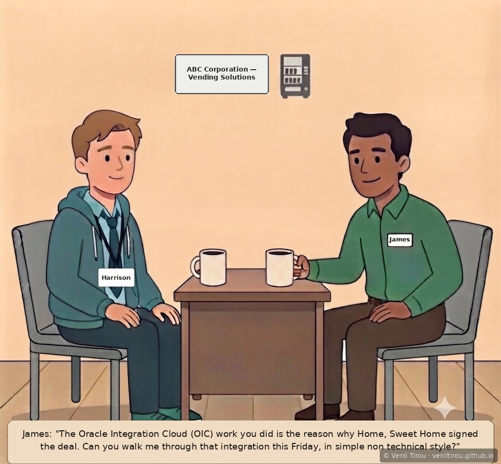
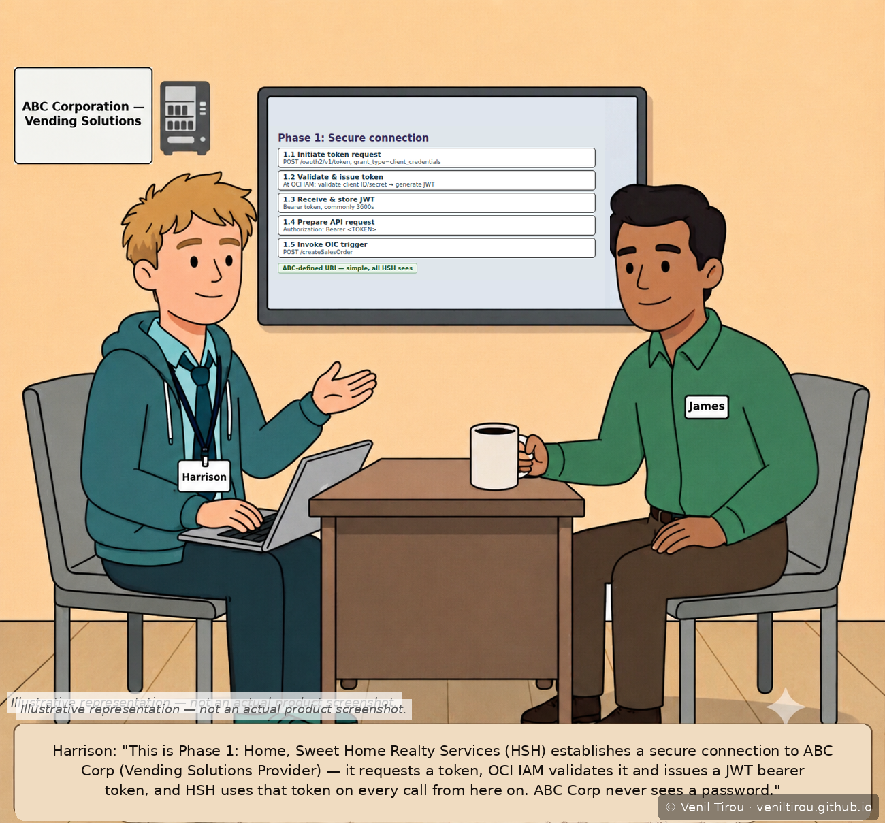
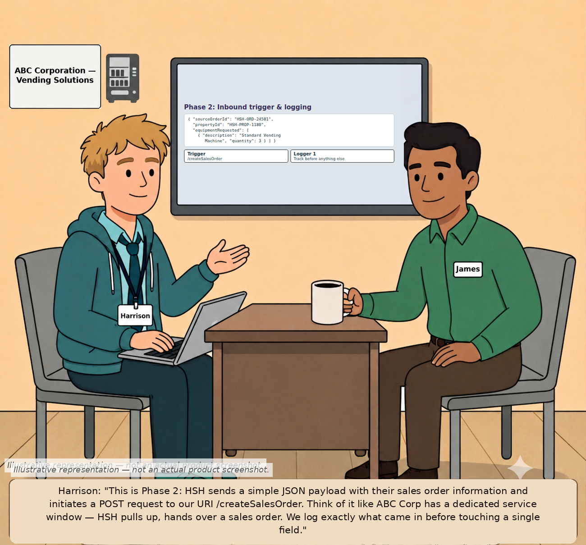
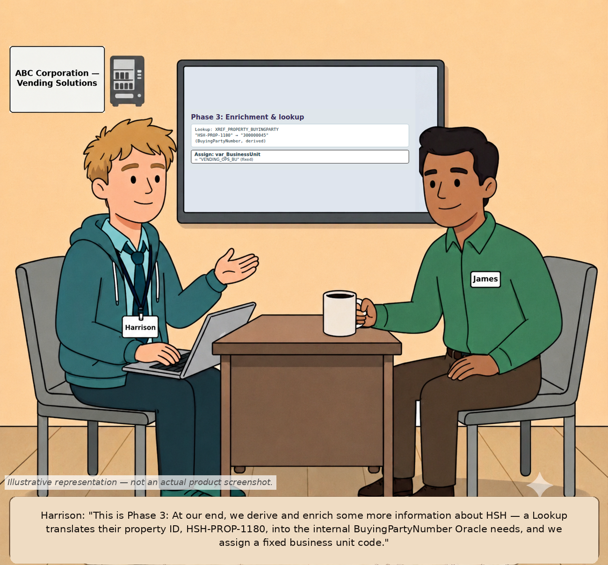
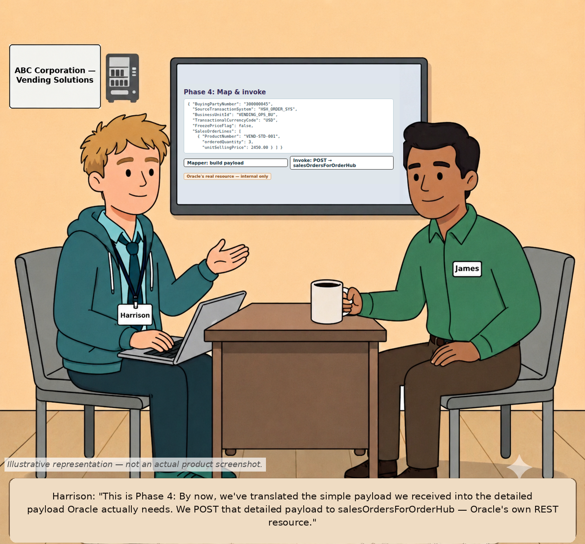
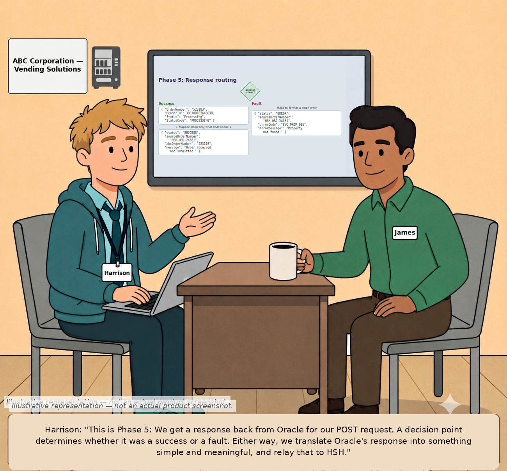
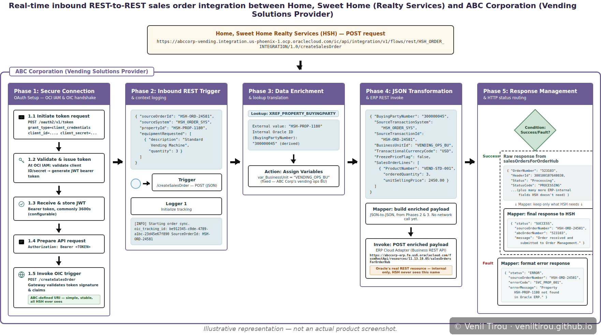
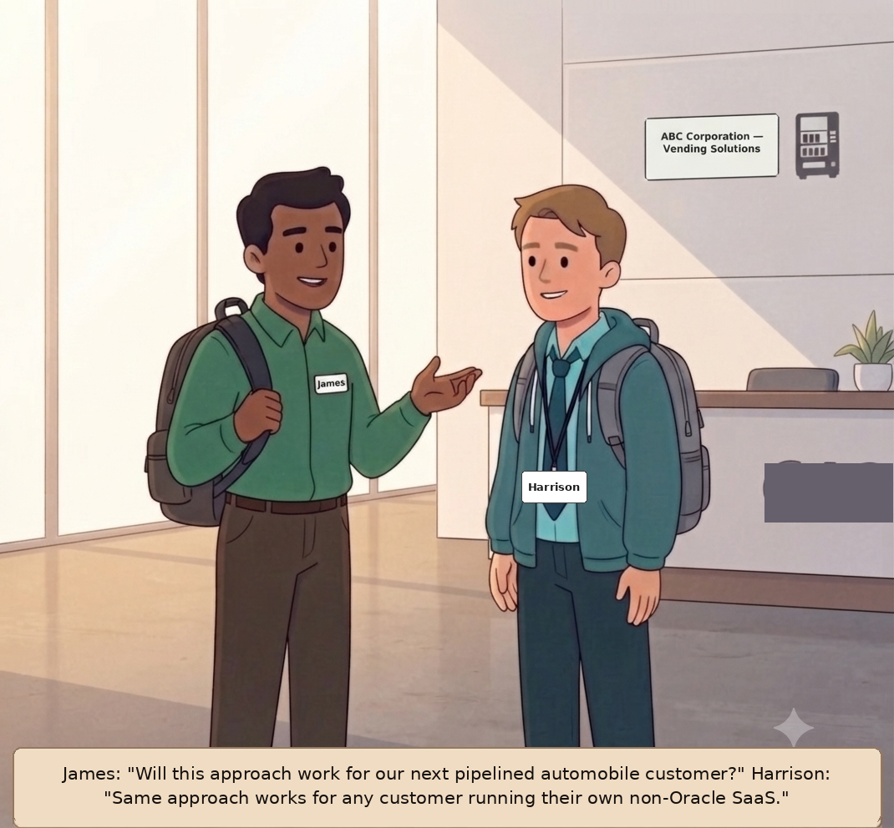

Advanced · Integrations
OIC Under the Hood — What Home, Sweet Home Never Sees
A 7-scene follow-up to both "Oracle Integration Cloud" and "The Friday Debrief." Those chapters covered the build and the plain-language recap. This one goes one layer deeper — the OAuth handshake, the real Oracle field names, the actual REST endpoint Oracle exposes, and the fault path — narrated left to right as one continuous flow, phase by phase, from Harrison to James.
Business Scenario: The OIC build from earlier chapters
is live and working — Home, Sweet Home's orders are flowing into ABC
Corporation's Oracle Order Management automatically. Before James
pitches the same pattern to the next non-Oracle customer in the
pipeline, he wants the technical detail he can stand behind under
scrutiny — not the simplified version, the real one. Harrison walks him
through all five phases in sequence: how a request proves who it is,
how it's received and logged, how it's translated into Oracle's terms,
how it's actually invoked, and how the response is deliberately
narrowed down before HSH ever sees it.
A note on technical accuracy: The security flow,
field names, and REST resource path in this chapter
(
OAuth 2.0 via OCI IAM, JWT bearer
token, BuyingPartyNumber, FreezePriceFlag,
salesOrdersForOrderHub) are checked against Oracle's
current documentation for Oracle Integration and Oracle Fusion Cloud
Order Management. The diagrams are illustrative reconstructions built
to be technically accurate, not actual product screenshots — Oracle's
UI and API details can change across releases.
The Storyboard
📱 On mobile? Pinch to zoom on each screen to read the payloads and field names clearly.
1The Ask

What this shows: James credits the OIC build for winning the Home, Sweet Home deal and asks Harrison for a full technical walkthrough — not the simplified Friday version — before pitching the same pattern to the next customer.
2Phase 1 — Proving Who's Calling

What this shows: Before HSH's system can call ABC at all, it has to prove its identity — requesting a token, having OCI IAM validate and issue a JWT bearer token, then presenting that token on every subsequent call. ABC never handles a password directly.
3Phase 2 — Receiving It, Logging It First

What this shows: HSH's actual JSON payload — order ID, property ID, and requested equipment — arrives at ABC's own REST endpoint, /createSalesOrder, and gets logged immediately, before any processing happens.
4Phase 3 — Translating Into Oracle's Terms

What this shows: A Lookup table resolves HSH's property ID into the internal BuyingPartyNumber Oracle Order Management actually needs, and a fixed business unit code gets assigned — a value HSH's system was never expected to provide.
5Phase 4 — Two Separate Things, Not One

What this shows: Two distinct actions, not one — a Mapper assembles the full payload Oracle expects (no network call yet), then Invoke actually POSTs it to Oracle's real REST resource, salesOrdersForOrderHub, which HSH never sees or needs to know about.
6Phase 5 — Narrowing the Response on Purpose

What this shows: Oracle's raw response — order number, header ID, internal status codes — gets deliberately trimmed by a second Mapper down to just what HSH needs, on both the success and fault paths.
7All Five Phases, Left to Right

What this shows: All five phases in one continuous diagram, now anchored at the top by the actual trigger — HSH's POST call to the REST endpoint Harrison exposed — so the whole flow reads start to finish without needing the rest of the chapter for context.
8The Payoff

What this shows: James connects the technical depth just covered to the next deal already in the pipeline, confirming this is a repeatable pattern, not a one-off build.
Why This Chapter Matters
The takeaway: Every phase in this build quietly draws
a line between what the outside world sees and what stays internal to
ABC. HSH gets a stable, ABC-defined URI and a deliberately minimal
response; it never sees Oracle's real REST resource name, Oracle's
internal identifiers, or Oracle's raw response shape. That boundary —
not the individual actions — is the actual design decision worth
understanding, and it's what makes the same pattern reusable for the
next non-Oracle customer without HSH's integration ever needing to
change.
Concepts Covered
| Concept | What it means | Step |
|---|---|---|
| App Driven Orchestration | The OIC integration style used throughout this build — triggered by an inbound call rather than a schedule, built as an ordered set of actions. This particular integration is synchronous: it processes and responds within the same call, rather than acknowledging receipt and finishing the work later. | 1–8 |
| OAuth 2.0 via OCI IAM | The REST trigger's security policy; the actual grant type (client credentials, authorization code, etc.) is configured on a confidential client application in OCI Identity and Access Management, not on the trigger itself. | 2 |
| JWT bearer token | The signed token HSH's system presents on every call, in the Authorization header — proves identity without ever sending a password to OIC directly. | 2 |
| REST Adapter (Trigger) | The inbound connection exposing ABC's REST endpoint — an ABC-chosen, stable URI that has nothing to do with Oracle's own naming. | 3 |
| Logger | Records what was received (and later, what was sent) at key points — the detail actually needed to debug a specific failure. | 3, 6 |
| OIC Lookup | Translates an external value HSH provides into the internal Oracle identifier Oracle Order Management actually expects. | 4 |
| Assign | Sets a fixed or derived variable the source system never sent, because it's constant on ABC's side (like a business unit code). | 4 |
| Mapper (request) | Builds the enriched payload in memory — a data transformation step with no network call of its own. | 5 |
| Invoke | The step that actually fires the HTTP call — here, a POST to Oracle's real REST resource, Business (REST) API style, JSON end to end. | 5 |
| Public vs. internal URI | /createSalesOrder is ABC's own, stable, HSH-facing name. salesOrdersForOrderHub is Oracle's actual resource — internal only, and free to change without breaking HSH's integration. | 5 |
| Mapper (response) | A second mapper that deliberately discards most of Oracle's raw response, keeping only what the original caller needs. | 6 |
| Fault routing | The same condition branch that handles success also formats a clean, minimal error response on failure — HSH gets a readable message, not an internal stack trace. | 6 |
| Reusable pattern | The same five-phase shape applies to the next non-Oracle customer, not just this one build. | 8 |